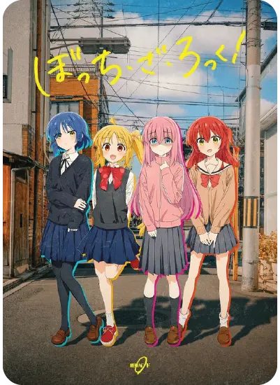
0:00
0:00
Seisyun complex
Kessoku band

0:00
0:00
Kessoku band
Website project
Create a stylish music player built using HTML, CSS, and JS that includes album art, controls, and a time readout..
March 4 - March 17 2024
Web designer and developer
I have made a lot of iterations for the "sketches" and finally came up with some interesting ideas. The sketch with the waveform (the one that changes according to the music) in the bass represents that the song is playing with a bass background sounds. The image of the song is put in a bass pick shape.
I have decided to choose this version because the bass pick is not recognizable, the bass with a waveform seems too busy with what's happening on the screen. The font I chose for the Music Player is Roboto. The background color I chose is a nice soft gradient galaxy color. The progress bar is going to have a waveform that correspond to the sound as well. It is a bit ambitious but I'll try:>
I am happy with how this project turned out. I relatively struggled with the Javascript in making the play, pause button working, and especially the waveform. However much I tried different online resources, I could not make the waveform actually respond to the audio. Therefore, I put the still image of the waveform in a div and make it open with the audio time. This is my idea making the waveform open with the thumb.I'm excited to see what I can do for future projects.
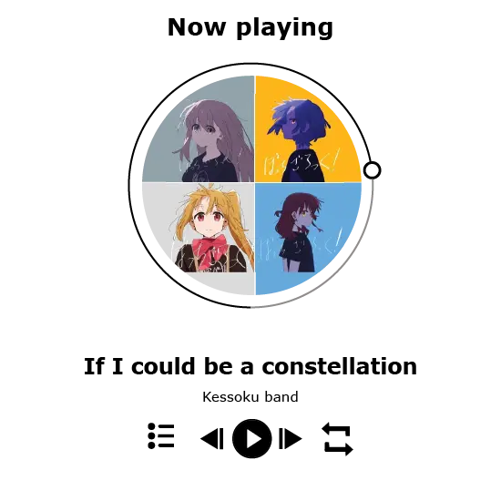
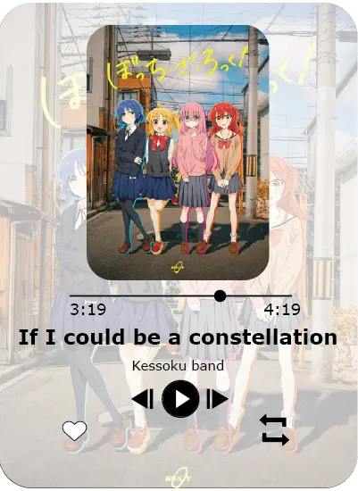
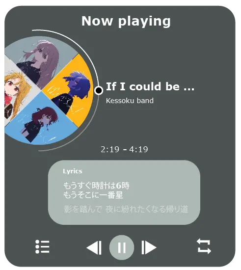
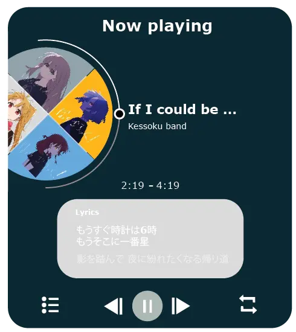
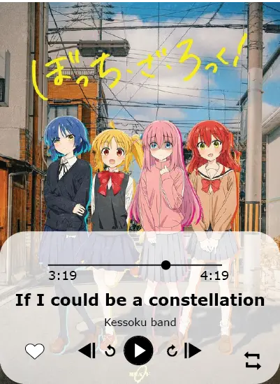
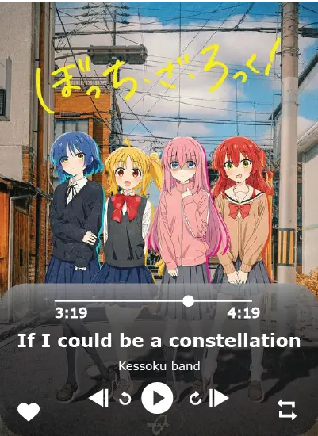
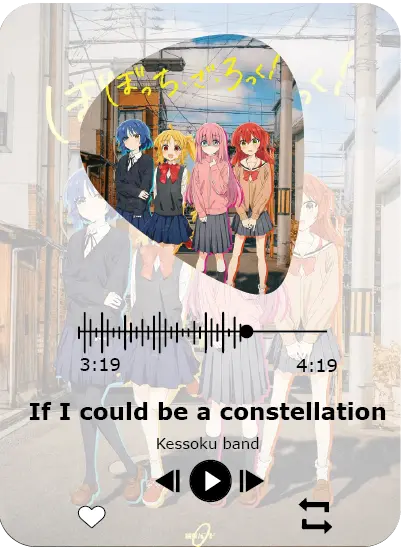
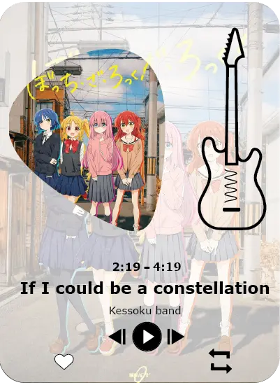
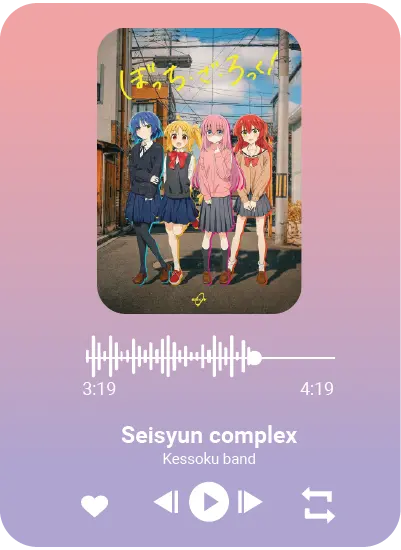
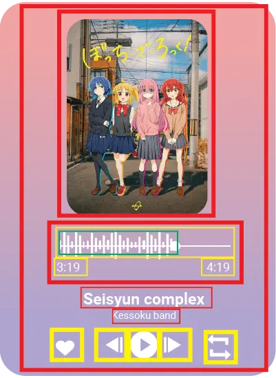